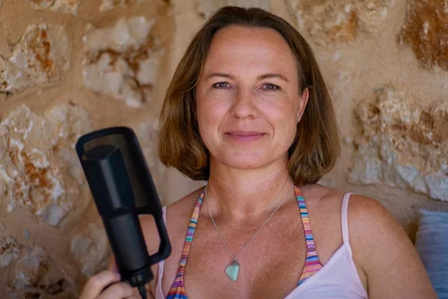
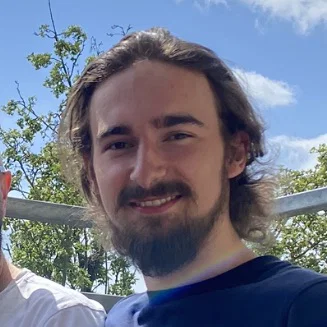
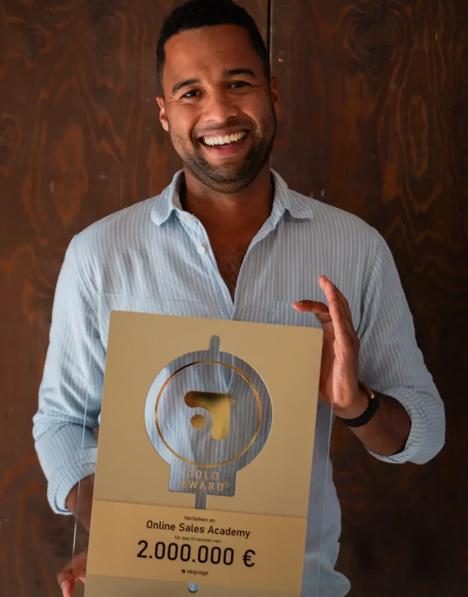
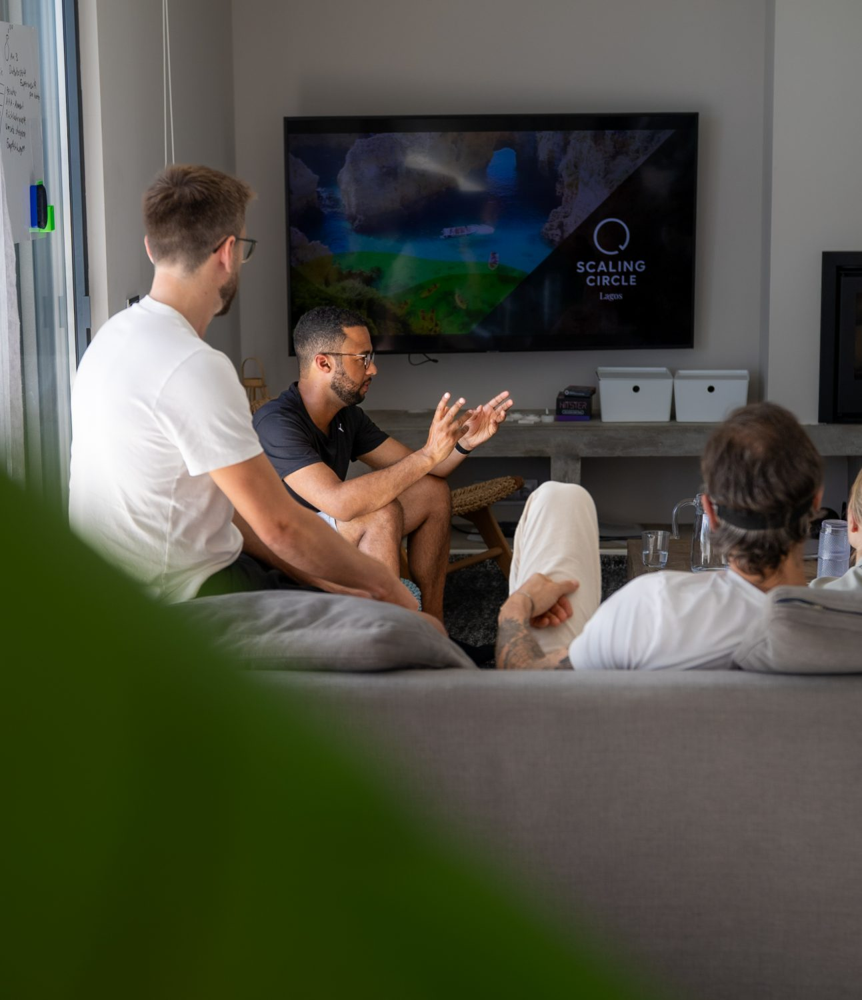
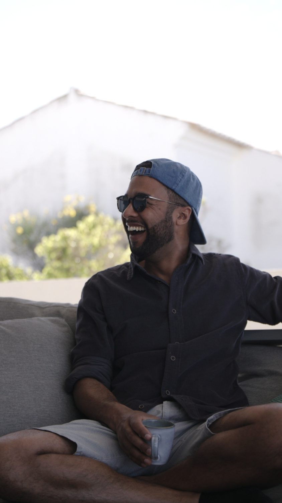
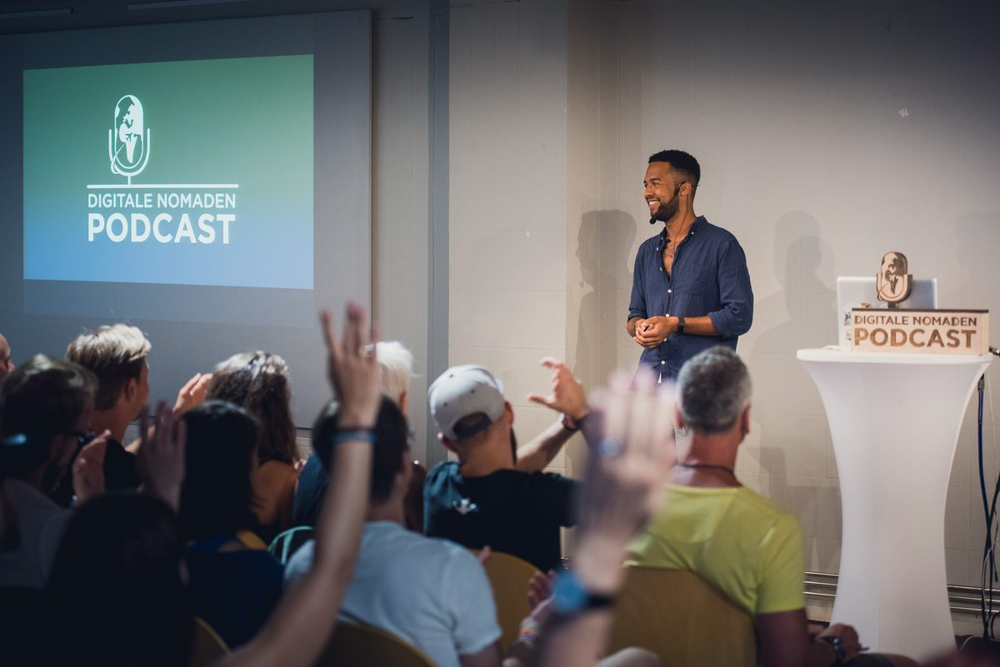
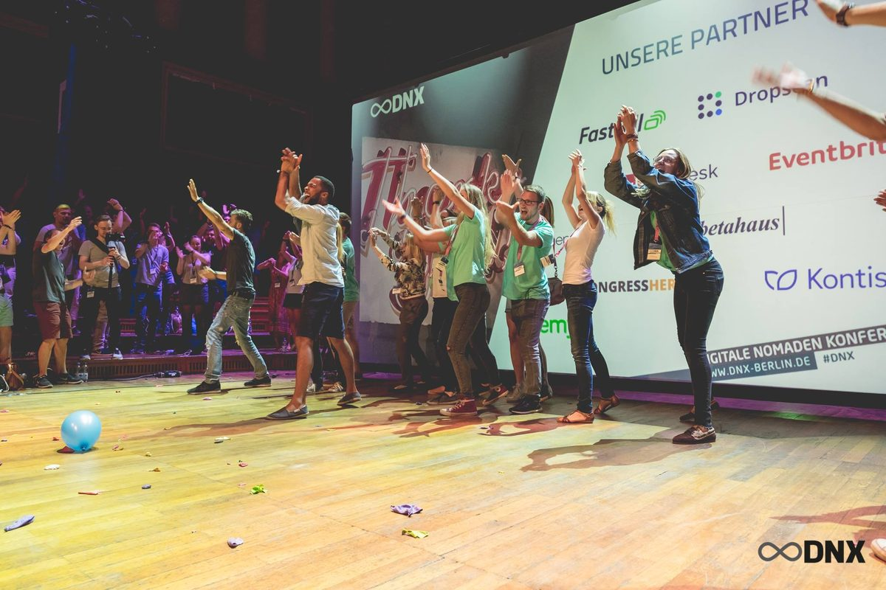

01
Klarheit finden
Zuerst schauen wir, wo deine Herausforderung wirklich liegt und was du dir wünschst. Oft ist genau das der eigentliche Schritt: herauszufinden, was das Ziel überhaupt ist. Ich helfe dir, durch den Nebel zu kommen.
Hi, ich bin Sascha. Als mehrfacher Unternehmer und Begleiter helfe ich Selbstständigen und Unternehmer:innen, ihre Erfolge zu erreichen und auch genießen zu können. Wir setzen gemeinsam im Innen an, nicht nur im Außen – da, wo du alles verstanden hast und das Problem trotzdem bleibt.
Zuerst schauen wir, wo deine Herausforderung wirklich liegt und was du dir wünschst. Oft ist genau das der eigentliche Schritt: herauszufinden, was das Ziel überhaupt ist. Ich helfe dir, durch den Nebel zu kommen.
Dann gehen wir an die Wurzel. Mit wissenschaftlich fundierten Techniken, die unterhalb des Verstandes ansetzen – dort, wo die Herausforderungen tatsächlich entstehen. Werkzeuge wie Hypnose und Breathwork helfen dir dabei, dein Nervensystem zu regulieren und an die eigentlichen Ursachen heranzukommen.
Wir beobachten in jeder Session, was sich verändert hat. Wir nehmen die Themen, die sich zeigen, Schritt für Schritt mit in deinen Alltag.

„Antworten fühlen auf Fragen, wo ich mit dem Verstand nicht weiterkam."
Sascha hält einen unglaublich sicheren Raum, in dem alles da sein darf. […] Fragen rund um die Freiberuflichkeit – und die Antworten kommen aus ganz anderen Ecken und treffen ins Herz. Danke Sascha!

„Millionen-Unternehmer und trotzdem Mensch geblieben."
Sascha hebt sich von vielen anderen ab, indem er authentisches Marketing betreibt. […] Offen, ehrlich und bodenständig erzählt er sowohl von seinen Erfolgen als auch von seinen Misserfolgen. Seinen Content schicke ich regelmäßig an befreundete Selbstständige und Unternehmer.
„Zum ersten Mal wirklich verstanden, worum es geht."
Obwohl ich schon einige Erfahrungen mit Breathwork gemacht hatte […]. Ich habe mich die ganze Session über sicher und professionell geleitet gefühlt – und es war eine sehr bereichernde persönliche Reise durch meine innere Welt.

Bevor ich Unternehmer wurde, war ich im Bereich Feuerwehr und Rettungsdienst tätig. Jahrelang habe ich unter Hochdruck Menschen durch Extremsituationen begleitet.
Später als Selbstständiger und Unternehmer war ich getrieben und konnte kaum abschalten. Obwohl ich Dinge erreichte, von denen ich nur hätte träumen können, fühlte ich keine innere Zufriedenheit.
Irgendwann verstand ich: Wichtiger als die reine Arbeit an Marketing, Sales und Fulfillment ist die innere Arbeit.
In erster Linie bin ich Unternehmer und durchlebe jeden Tag noch das, was du auch durchlebst. Ich habe mehrere Online-Unternehmen aufgebaut, einige mit Millionenumsätzen. Ich weiß, wie es ist, aus dem Nichts etwas zu erschaffen und die Verantwortung für große Projekte und Menschen zu tragen.
Privat bin ich Vater einer Tochter und lebe mit meiner Familie auf dem Land an der Ostsee. Ich liebe die Natur, Bücher, gutes Essen und das unaufgeregte Leben. Nach Jahren voller Action genieße ich, dass das Leben jetzt auch leise schön sein darf.
Lass uns reden →



Für Selbstständige und Unternehmer:innen, die weiter wachsen wollen – aber nicht länger auf Kosten von Gesundheit und Leben. Menschen, die getrieben sind, kaum noch abschalten können und sich fragen: „Ich habe so viel erreicht – warum kann ich es nicht genießen?" Oder die ein Problem im Außen schon verstanden haben und mit dem Verstand trotzdem nicht weiterkommen.
Worum es nicht geht: einfach den Fuß vom Gas zu nehmen. Es geht nicht ums Weniger, sondern darum, erfolgreich zu wachsen und dabei wieder bei sich anzukommen und sich zu erinnern, warum man mal gestartet ist.
Du meldest dich über das Kontaktformular, und wir vereinbaren ein Kennenlernen – per Telefon oder Zoom, ganz wie es dir passt. Wir schauen gemeinsam auf dein Ziel und deine Herausforderungen und finden heraus, ob und wie wir zusammenarbeiten wollen. Danach geht es los. Die eigentliche Arbeit findet online statt.
Eine Standard-Session gibt es nicht. Wir schauen zuerst, mit welchem Thema du gerade hereinkommst, und dann wähle ich die Technik, die dazu passt – nicht umgekehrt. Du musst nicht zu meinen Methoden passen, die Methode passt sich dir an. Oft arbeiten wir dabei unterhalb des Verstandes: nicht nur reden, sondern dort ansetzen, wo das Problem wirklich sitzt, die Ursache lösen und das Ergebnis in deinen Alltag integrieren. Im Mittelpunkt steht immer dein Ziel – kein Schema F, in das ich dich presse.
Ehrlich gesagt tue ich mich mit dem Wort „Coach" schwer – zu viele Instagram-Marketer haben es in Verruf gebracht. Ich bin in erster Linie selbst Unternehmer und begleite Selbstständige und Unternehmer:innen auf dem Weg in ihr Innenleben. Das ist wohl der Hauptunterschied. Ich lehne Geld, Erfolg und Wachstum nicht ab – ganz im Gegenteil, ich habe selbst weiterhin unternehmerischen Drive. Ich verbinde die unternehmerische Arbeit mit Inner Work. Es geht nicht darum, deinen Funnel zu ändern, sondern an die Wurzel deiner Herausforderung zu gehen und dort nachhaltige Veränderung zu schaffen.
Am einfachsten über das Kontaktformular. Dann melde ich mich persönlich, und wir lernen uns ganz unverbindlich kennen. Du sprichst nicht mit einem Team oder einem Setter, sondern direkt mit mir über das, was dich gerade wirklich bewegt.
Schreib mir direkt. Du sprichst nicht mit einem Team oder einem Setter, sondern mit mir über das, was dich gerade wirklich bewegt.